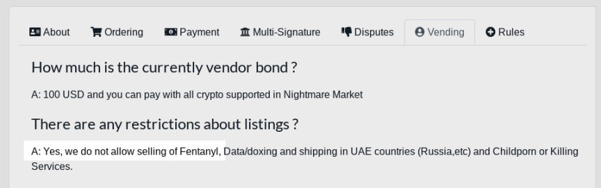
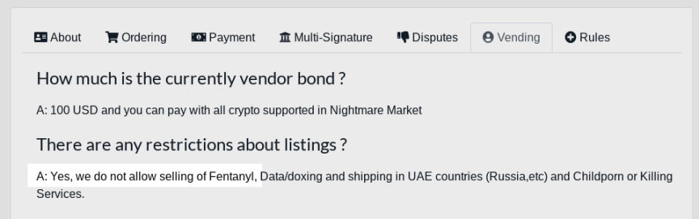

Nightmare Market is Cracking Down on Vendors Selling Fentanyl
~3 min read | Published on 2019-06-24, tagged Darkweb-Market, Fentanyl using 515 words.
Nightmare Market has reported an increase in the number of vendors engaging in activities prohibited by the market, such as creating listings for fentanyl or fentanyl analogues or requiring buyers to finalize early without permission from the market. To increase the safety of their customers, Nightmare Market will be banning vendors selling fentanyl and giving other one warning to vendors in violation of the market’s other rules.
Although Nightmare Market has always prohibited the sale of fentanyl and all fentanyl analogues or products containing fentanyl, Nightmare Market staff have spotted a recent increase in the number of vendors selling fentanyl. Sometimes the vendors list fentanyl or fentanyl analogue “blends.” The blends are often the banned substance mixed with an inert compound such as mannitol or a similar cutting agent.

Markets in the past have banned fentanyl products as well. Dream and Darknet Heroes League made headlines in 2018 for banning the sale of fentanyl. Darknet Heroes League gave users a 48-hour warning to remove fentanyl and fentanyl related listings before stripping the account of the vendor status. Nightmare Market has always banned the sale of fentanyl products; vendors violating the rule are not unknowingly listing prohibited products.

Vendors caught selling fentanyl are banned immediately. According to the market, this rule is enforced for the safety of the market’s users. The restrictions surrounding a vandor’s ability to bypass the market’s escrow system are also in place to protect customers. Vendors with FE privileges can easily list a “great deal” with no intention of filling orders. Once caught, the vendor can simply vanish. Nightmare Market does allow established vendors to request the privilege to ask customers to finalize early. A vendor must have a 4.9 or higher rating and 500 or more transactions.
A notice posted on the market asks users to report vendors in violation of the market’s rules:
MESSAGE TO ALL USERS: report all direct deal offers, vendors that request FE without permission and forbidden items such as fentanyl. We can not protect users engaging in outside of market deals by Wickr, Jabber or Telegram. Avoid getting scammed by keeping all deals on the market!
Other markets have a similar set of requirements for FE approval. Some of those markets have been accused of rejecting FE applications unless other unknown factors are met. So far, this does not seem to be a problem for vendors on Nightmare Market vendors. Once a vendor meets those requirements, the market will approve their application.
Vendors asking a buyer to finalize early without permission from the market receive one warning before the market permanently bans the vendor. This, like the fentanyl ban, is not something that should surprise the vendor; the rules for vending very clearly forbid unsanctioned FE requests.
Banning fentanyl vendors is one of the market’s top priorities right now. As developers work on other parts of the marketplace, the market’s staff is actively investigating rogue vendors.
Although Nightmare Market almost never gets knocked offline and rarely needs to change links, occasionally a link will stop working. Below are the working links as of Oct 7http://sye74pzse4nvzaho.onionhttp://tny4avpz5w7gkonz.onionhttp://ykmwa3kkyvgzyipo.onionhttp://oyqfhp3h5yo3kvse.onionhttp://knfhklmozzc7hslv.onionhttp://2rkqcy5bowfklwjc.onionhttp://nfqhjfggilqxrb7t.onionhttp://lwq757ih2y2jnerx.onionhttp://4iyuyc6vachjawhg.onionhttp://cpzj52bfygtfzxs7.onionhttp://cbqozb75kjiwqhcn.onionhttp://65bsun62vsydcndp.onionhttp://pgn2eqbwbebwdhev.onionhttp://w5ovexiotig6hnc3.onionhttp://lqehtjsjs3s3mf5b.onionhttp://4afncp4ix2oo43r4.onionhttp://36ovvt3xinc7m7ct.onionhttp://agpa7pmeokjyjoae.onionhttp://sh4eul2h2g3d2mtu.onion
Although Nightmare Market has always prohibited the sale of fentanyl and all fentanyl analogues or products containing fentanyl, Nightmare Market staff have spotted a recent increase in the number of vendors selling fentanyl. Sometimes the vendors list fentanyl or fentanyl analogue “blends.” The blends are often the banned substance mixed with an inert compound such as mannitol or a similar cutting agent.
A fentanyl vendor on Nightmare Market
Markets in the past have banned fentanyl products as well. Dream and Darknet Heroes League made headlines in 2018 for banning the sale of fentanyl. Darknet Heroes League gave users a 48-hour warning to remove fentanyl and fentanyl related listings before stripping the account of the vendor status. Nightmare Market has always banned the sale of fentanyl products; vendors violating the rule are not unknowingly listing prohibited products.

Fentanyl is Banned on Nightmare Market
Vendors caught selling fentanyl are banned immediately. According to the market, this rule is enforced for the safety of the market’s users. The restrictions surrounding a vandor’s ability to bypass the market’s escrow system are also in place to protect customers. Vendors with FE privileges can easily list a “great deal” with no intention of filling orders. Once caught, the vendor can simply vanish. Nightmare Market does allow established vendors to request the privilege to ask customers to finalize early. A vendor must have a 4.9 or higher rating and 500 or more transactions.
A notice posted on the market asks users to report vendors in violation of the market’s rules:
MESSAGE TO ALL USERS: report all direct deal offers, vendors that request FE without permission and forbidden items such as fentanyl. We can not protect users engaging in outside of market deals by Wickr, Jabber or Telegram. Avoid getting scammed by keeping all deals on the market!
Other markets have a similar set of requirements for FE approval. Some of those markets have been accused of rejecting FE applications unless other unknown factors are met. So far, this does not seem to be a problem for vendors on Nightmare Market vendors. Once a vendor meets those requirements, the market will approve their application.
Vendors asking a buyer to finalize early without permission from the market receive one warning before the market permanently bans the vendor. This, like the fentanyl ban, is not something that should surprise the vendor; the rules for vending very clearly forbid unsanctioned FE requests.
Banning fentanyl vendors is one of the market’s top priorities right now. As developers work on other parts of the marketplace, the market’s staff is actively investigating rogue vendors.
Although Nightmare Market almost never gets knocked offline and rarely needs to change links, occasionally a link will stop working. Below are the working links as of Oct 7http://sye74pzse4nvzaho.onionhttp://tny4avpz5w7gkonz.onionhttp://ykmwa3kkyvgzyipo.onionhttp://oyqfhp3h5yo3kvse.onionhttp://knfhklmozzc7hslv.onionhttp://2rkqcy5bowfklwjc.onionhttp://nfqhjfggilqxrb7t.onionhttp://lwq757ih2y2jnerx.onionhttp://4iyuyc6vachjawhg.onionhttp://cpzj52bfygtfzxs7.onionhttp://cbqozb75kjiwqhcn.onionhttp://65bsun62vsydcndp.onionhttp://pgn2eqbwbebwdhev.onionhttp://w5ovexiotig6hnc3.onionhttp://lqehtjsjs3s3mf5b.onionhttp://4afncp4ix2oo43r4.onionhttp://36ovvt3xinc7m7ct.onionhttp://agpa7pmeokjyjoae.onionhttp://sh4eul2h2g3d2mtu.onion